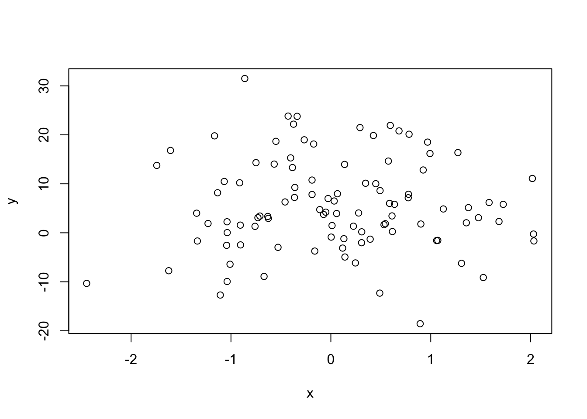

This is a report template.
If you hit the Knit button in RStudio, it will create an html_document because that is the first line in the YAML header.
---
title: "report-template"
author: "X. Ellent Student"
date: "2017-01-30 16:11:12"
output:
html_document:
self_contained: false
word_document:
fig_width: 5
fig_height: 5
fig_caption: false
df_print: kable
pdf_document:
toc: true
toc_depth: 2
---You can just render the document at the command line with rmarkdown::render(input = "report-template.Rmd".
You can change the default output format by changing the order of the items in the header:
---
title: "report-template"
author: "X. Ellent Student"
date: "2017-01-30 16:11:12"
output:
word_document:
fig_width: 5
fig_height: 5
fig_caption: false
df_print: kable
html_document:
self_contained: false
pdf_document:
toc: true
toc_depth: 2
---This renders a Word file by default.
To pick some but not all output formats, enter rmarkdown::render(input = "report-template.Rmd", output_format = c("html_document", "pdf_document"))
You can also go hog-wild and render all three output formats at once by entering rmarkdown::render(input = "report-template.Rmd", output_format = "all").
Describe what you did here.
With whom…
With what…
How…
What you measured…
x = rnorm(n = 100, mean = 0, sd = 1)
y = rnorm(n = 100, mean = 5, sd = 10)What you found…
plot(x,y)
The correlation between x and y is 0.0020701.
hist(x)hist(y)The mean of x is 0.0457303 and the standard deviation is 0.9282611. Or, try a table:
| Variable | Mean | SD |
|---|---|---|
| x | 0.0457303 | 0.9282611 |
| y | 5.6509954 | 9.3985258 |
What you concluded.